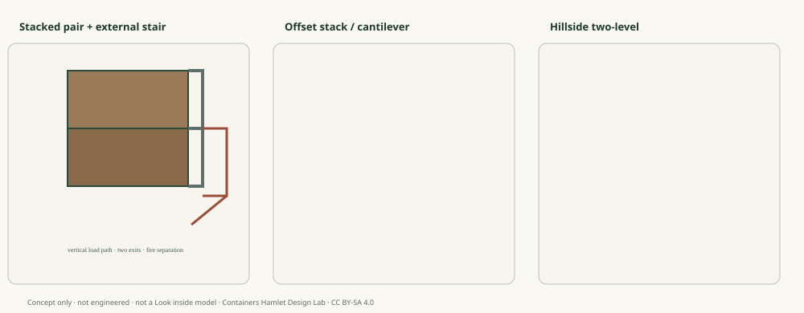

Two-storey containers
Three ways to stack. One structural question.
A two-storey container home is not a second box placed on the first. It is a vertical load path, a fire-separated egress strategy, a foundation with overturning, and a construction sequence. These three options are studies for an engineer and building official — not buildable models yet.
Not a Look inside model. The current Design Lab geometry is horizontal. Adding a second storey to the explorer without the structure, fire separation, stairs, guards and egress would be false precision. This page shows what must be resolved first.
The three options

| Option | What it buys | What must be resolved |
|---|---|---|
| Stacked pair + external stair | A clear two-storey house on a small footprint; an external stair can keep the upper floor independent. | Vertical load path through corner castings, lateral bracing, external stair weather/egress, fire separation, guards, two exits. |
| Offset stack / cantilever | A sheltered lower entry or deck, a smaller upper floor and a more interesting section. | Back-span and overturning, connection design, foundation uplift, upper-floor egress, snow drift and wind. |
| Hillside two-level | Grade entry on the uphill side; the lower level walks out downslope; can shorten the accessible route. | Retaining, drainage, slope stability, foundation, fire separation, internal stair, downhill egress and tree/rock protection. |
Structure and foundation details
Structure and foundation
- Load path: each upper container needs a continuous path through its corner castings, a steel transfer frame or a designed bearing wall to the foundation.
- Lateral stability: stacked containers are tall, light and stiff; bracing, diaphragm action and connection slip need engineering.
- Foundation: overturning, uplift, frost and point loads increase. A pile layout for a single container is not automatically adequate for two.
- Wind and seismic: the upper storey has greater exposure; cladding, solar, guards and shutters add load.
- Lift and sequence: crane reach, rigging, temporary stability and connection access before the second lift.
Fire separation and egress details
Fire separation and egress
- Two remote exits: an upper floor cannot rely on one external stair. Egress windows, a protected stair and a second route need review.
- Fire separation: floor/ceiling assembly, penetrations, stair enclosure and exterior spread between levels.
- Smoke and CO: interconnected alarms, a CO strategy for battery/PV/garage risks, and a clear evacuation plan.
- Guards and stairs: width, rise/run, headroom, landings, handrails and weather protection.
- Fire department: access, water, address signage and the ability to reach both levels.
See the forest fire-resilience guide. That page is also a design brief, not a rating.
Envelope, services and comfort
Envelope, services and comfort
- Thermal bridging: the steel frame and floor cassette are thermal bridges; continuous insulation and a thermal break need detail.
- Air/vapour: the floor/ceiling junction is a condensation risk; do not rely on the steel as the air barrier.
- Services: plumbing, drainage, ventilation and electrical risers need a planned vertical chase.
- Acoustics: impact noise and flanking between levels.
- Solar: the upper roof may be the only good array location; structure, wind uplift and fire access still apply.
What would change in the model
What would change in the model
To make a real Look inside two-storey model, the data and renderer need:
- a vertical
levelorbase_elevation_mper module; - a structural connection/transfer model and foundation uplift checks;
- stairs, landings, guards and two exit paths;
- a fire-separated floor/ceiling assembly and penetration model;
- level-aware openings, rooms, zones, solar, porches and cutaways.
None of that is in the current horizontal model. The next step is an engineering brief, not a visual-only stack.
My recommendation
Test the hillside two-level option first if the site has a real grade change: it can give a grade entry and a walk-out lower level while keeping the footprint small. Test the stacked pair only if the foundation, crane access and a second egress route are credible. The offset stack is the most structurally demanding and should follow, not lead.
Before any of them enters Look inside, ask a structural engineer and building official for a written opinion on the load path, fire separation, stair/egress strategy, foundation and height/zoning.